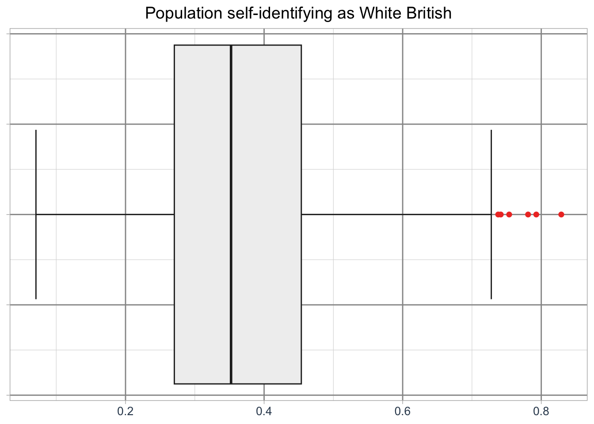
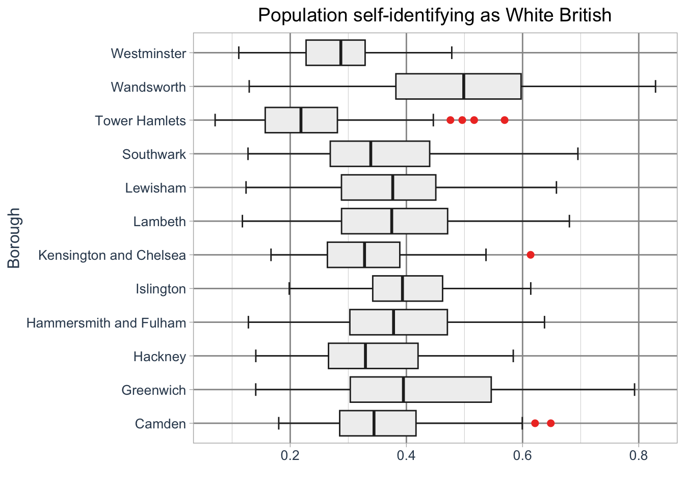
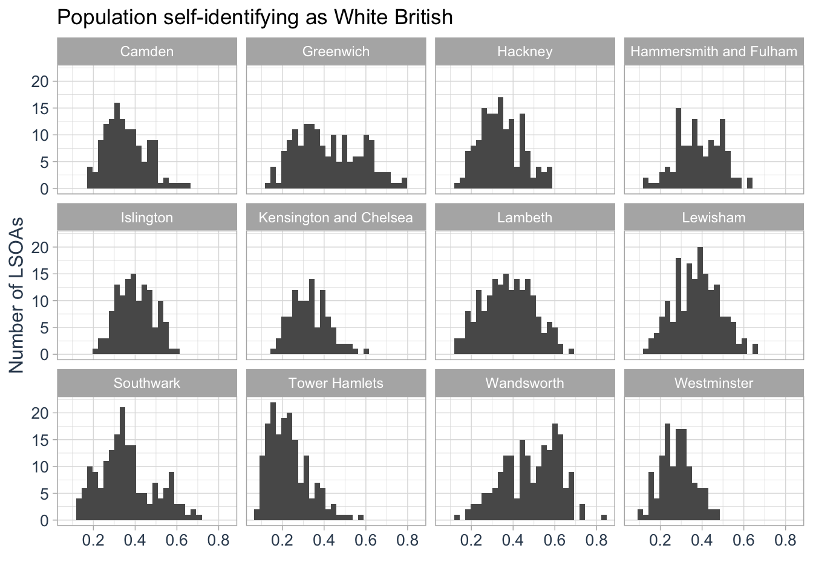

10 Complex Visualisations
Most of the visualisations we have created over the past weeks have been maps. However, you will often need to use other types of visualisations for your data, such as histograms, scatterplots, dendrograms, and boxplots. While base R can be used for simple visualisations, it is best suited for quick data inspections. For publication-worthy and more complex visualisations, the ggplot2 library, which we used last week to create bivariate maps, offers a unified and effective approach to data visualisation based on the grammar of graphics.
10.1 Lecture slides
You can download the slides of this week’s lecture here: [Link].
10.2 Reading list
Essential readings
- Wickham, H. 2010. A layered grammar of graphics. Journal of Computational and Graphical Statistics 19(1): 3-28. [Link]
Suggested readings
- Cheshire, J. and Uberti, O. 2014. London, The Information Capital: 100 Maps & Graphics That Will Change How You View the City. London: Particular Books.
- Wickham, H., Çetinkaya-Rundel, M., and Grolemund, G. R for Data Science. 2nd edition. Chapter 3: Data visualisation. [Link]
10.3 Population groups in London
Today, we will use the same dataset that we used in Week 8 on self-identified ethnicity. We will visualise the distribution of the self-identified White-British population across the 12 Inner London Boroughs. The LSOA data covers all usual residents, as recorded in the 2021 Census for England and Wales, aggregated at the Lower Super Output Area (LSOA) level. A copy of the 2021 London LSOAs spatial boundaries is also available. If you do not already have it on your computer, save these file in your data/attribues and data/spatial folders.
| File | Type | Link |
|---|---|---|
| London LSOA Census 2021 Ethnicity | csv |
Download |
| London LSOA 2021 Spatial Boundaries | GeoPackage |
Download |
To get started, let us create our first script. File -> New File -> R Script. Save your script as w10-ethnicity-london.r.
We will start by loading the libraries that we will need:
R code
# load libraries
library(tidyverse)
library(sf)
library(janitor)
library(treemapify)You may have to install some of these libraries if you have not used these before.
Once downloaded, we can load the files in the usual fashion:
R code
# load attribute dataset
lsoa_eth <- read_csv("data/attributes/London-LSOA-Ethnicity.csv")Rows: 99880 Columns: 5
── Column specification ────────────────────────────────────────────────────────
Delimiter: ","
chr (3): Lower layer Super Output Areas Code, Lower layer Super Output Areas...
dbl (2): Ethnic group (20 categories) Code, Observation
ℹ Use `spec()` to retrieve the full column specification for this data.
ℹ Specify the column types or set `show_col_types = FALSE` to quiet this message.# load spatial dataset
lsoa21 <- st_read("data/spatial/London-LSOA-2021.gpkg") |>
st_drop_geometry()Reading layer `London-LSOA-2021' from data source
`/Users/justinvandijk/Library/CloudStorage/Dropbox/UCL/Web/jtvandijk.github.io/GEOG0030/data/spatial/London-LSOA-2021.gpkg'
using driver `GPKG'
Simple feature collection with 4994 features and 8 fields
Geometry type: MULTIPOLYGON
Dimension: XY
Bounding box: xmin: 503574.2 ymin: 155850.8 xmax: 561956.7 ymax: 200933.6
Projected CRS: OSGB36 / British National Grid# inspect
head(lsoa_eth)# A tibble: 6 × 5
Lower layer Super Output Areas…¹ Lower layer Super Ou…² Ethnic group (20 cat…³
<chr> <chr> <dbl>
1 E01000001 City of London 001A -8
2 E01000001 City of London 001A 1
3 E01000001 City of London 001A 2
4 E01000001 City of London 001A 3
5 E01000001 City of London 001A 4
6 E01000001 City of London 001A 5
# ℹ abbreviated names: ¹`Lower layer Super Output Areas Code`,
# ²`Lower layer Super Output Areas`, ³`Ethnic group (20 categories) Code`
# ℹ 2 more variables: `Ethnic group (20 categories)` <chr>, Observation <dbl># inspect
head(lsoa21) lsoa21cd lsoa21nm bng_e bng_n long lat
1 E01000001 City of London 001A 532123 181632 -0.097140 51.51816
2 E01000002 City of London 001B 532480 181715 -0.091970 51.51882
3 E01000003 City of London 001C 532239 182033 -0.095320 51.52174
4 E01000005 City of London 001E 533581 181283 -0.076270 51.51468
5 E01000006 Barking and Dagenham 016A 544994 184274 0.089317 51.53875
6 E01000007 Barking and Dagenham 015A 544187 184455 0.077763 51.54058
globalid pop2021
1 {1A259A13-A525-4858-9CB0-E4952BA01AF6} 1473
2 {1233E433-0B0D-4807-8117-17A83C23960D} 1384
3 {5163B7CB-4FFE-4F41-95B9-AA6CFC0508A3} 1613
4 {2AF8015E-386E-456D-A45A-D0A223C340DF} 1101
5 {B492B45E-175E-4E77-B0B5-5B2FD6993EF4} 1842
6 {4A374975-B1D0-40CE-BF6E-6305623E5F7E} 2904You can further inspect both objects using the View() function.
We will start by pivoting the data and transforming the raw counts into proportions:
R code
# prepare ethnicity data
lsoa_eth <- lsoa_eth |>
clean_names() |>
pivot_wider(id_cols = "lower_layer_super_output_areas_code", names_from = "ethnic_group_20_categories",
values_from = "observation") |>
clean_names()
# proportions, select columns
lsoa_eth <- lsoa_eth |>
rowwise() |>
mutate(eth_pop = sum(across(2:21))) |>
mutate(across(2:21, ~./eth_pop)) |>
select(-2)
# inspect
lsoa_eth# A tibble: 4,994 × 21
# Rowwise:
lower_layer_super_output_area…¹ asian_asian_british_…² asian_asian_british_…³
<chr> <dbl> <dbl>
1 E01000001 0.00271 0.0448
2 E01000002 0.00505 0.0736
3 E01000003 0.00682 0.0323
4 E01000005 0.239 0.0318
5 E01000006 0.116 0.00596
6 E01000007 0.113 0.0148
7 E01000008 0.110 0.00445
8 E01000009 0.119 0.0122
9 E01000011 0.146 0.00469
10 E01000012 0.122 0.00298
# ℹ 4,984 more rows
# ℹ abbreviated names: ¹lower_layer_super_output_areas_code,
# ²asian_asian_british_or_asian_welsh_bangladeshi,
# ³asian_asian_british_or_asian_welsh_chinese
# ℹ 18 more variables: asian_asian_british_or_asian_welsh_indian <dbl>,
# asian_asian_british_or_asian_welsh_pakistani <dbl>,
# asian_asian_british_or_asian_welsh_other_asian <dbl>, …If your clean_names() function returns an error, it is likely due to a conflict with another library that also includes a clean_names() function. In such cases, R cannot determine which one to use. To resolve this, you can specify the library explicitly by using janitor::clean_names().
The column names are rather long, so let’s rename these manually:
R code
# rename columns
names(lsoa_eth)[2:20] <- c("Asian - Bangladeshi", "Asian - Chinese", "Asian - Indian",
"Asian - Pakistani", "Asian - Other", "Black - African", "Black - Caribbean",
"Black - Other", "Mixed - Asian", "Mixed - Black African", "Mixed - Black Carribean",
"Mixed - Other", "White - British", "White - Irish", "White - Traveller", "White - Roma",
"White - Other", "Arab - Other", "Any Other Group")The last thing we need to do is extract the LSOAs that fall within the 12 Inner London Boroughs. We can do this by using the LSOA names that are inside the spatial dataframe:
R code
# boroughs
inner_boroughs <- c("Camden", "Greenwich", "Hackney", "Hammersmith and Fulham", "Islington", "Kensington and Chelsea", "Lambeth", "Lewisham", "Southwark", "Tower Hamlets", "Wandsworth", "Westminster")
# filter spatial data
lsoa21_inner <- lsoa21 |>
filter(str_detect(lsoa21nm, paste(inner_boroughs, collapse = "|")))
# filter attribute data, add lsoa names
lsoa_eth <- lsoa_eth |>
filter(lower_layer_super_output_areas_code %in% lsoa21_inner$lsoa21cd)
# add lsoa names
lsoa_eth <- lsoa_eth |>
left_join(lsoa21[1:2], by = c("lower_layer_super_output_areas_code" = "lsoa21cd"))
# inspect
lsoa_eth# A tibble: 1,792 × 22
# Rowwise:
lower_layer_super_output_areas_code `Asian - Bangladeshi` `Asian - Chinese`
<chr> <dbl> <dbl>
1 E01000842 0.00209 0.0265
2 E01000843 0.00167 0.0301
3 E01000844 0.00614 0.0258
4 E01000845 0.0193 0.0273
5 E01000846 0.0586 0.0179
6 E01000847 0.0506 0.0312
7 E01000848 0.00269 0.0249
8 E01000849 0.0125 0.0249
9 E01000850 0.0218 0.113
10 E01000851 0.0216 0.0824
# ℹ 1,782 more rows
# ℹ 19 more variables: `Asian - Indian` <dbl>, `Asian - Pakistani` <dbl>,
# `Asian - Other` <dbl>, `Black - African` <dbl>, `Black - Caribbean` <dbl>,
# `Black - Other` <dbl>, `Mixed - Asian` <dbl>,
# `Mixed - Black African` <dbl>, `Mixed - Black Carribean` <dbl>,
# `Mixed - Other` <dbl>, `White - British` <dbl>, `White - Irish` <dbl>,
# `White - Traveller` <dbl>, `White - Roma` <dbl>, `White - Other` <dbl>, …If you want to know what the paste(inner_boroughs, collapse = '|') code does, you can run it separately in the console to find out.
10.3.1 Building boxplots
The ggplot2 library is built on the layered grammar of graphics, which provides a structured approach to creating visualisations. This means that plots are constructed by adding layers, such as data, aesthetic mappings (e.g., axes, colours, sizes), geometric shapes (e.g., points, lines, bars), and optional elements like themes or statistical transformations. This modular design allows users to build complex and customisable plots step by step, ensuring flexibility and clarity in the visualisation process.
Let’s try to use this approach by making a boxplot on the distribution of people that self-identify as White British across all Inner London Boroughs. With ggplot2, every plot begins with the ggplot() function, which creates a coordinate system to which layers can be added. The first argument of ggplot() specifies the dataset to use:
R code
# initiate ggplot
ggplot(data = lsoa_eth)To build your graph, you add one or more layers to ggplot(). For instance, geom_point() adds a layer of points to create a scatterplot. ggplot2 provides many geom functions, each adding a different type of layer to your plot. To create a boxplot, you add the geom_boxplot() layer. For boxplots, the mapping argument defines how dataset variables are linked to visual properties, such as the grouping or value axes. The mapping is paired with aes(), where y specifies the numeric variable:
R code
# initiate ggplot
ggplot(data = lsoa_eth, aes(x = `White - British`)) +
# add geometry
geom_boxplot()ggplot2.An aesthetic is a visual property of the elements in your plot. Aesthetics include attributes like size, shape, or colour of points. By modifying the values of these aesthetic properties, you can display a point in various ways, allowing for greater customisation and clarity in your visualisation.
Just like with tmap, we can customise the basic plot by styling the boxplot, adding labels, and adjusting its overall appearancs:
R code
# initiate ggplot
ggplot(data = lsoa_eth, aes(x = `White - British`)) +
# add geometry
geom_boxplot(
fill = "#f0f0f0",
color = "#252525",
outlier.color = "#ef3b2c",
linewidth = 0.5,
staplewidth = 0.5,
outlier.shape = 16,
outlier.size = 2
) +
# add labels
labs(
title = "Population self-identifying as White British",
x = ""
) +
# set basic theme
theme_light() +
# customise theme
theme(
plot.title = element_text(hjust = 0.5, size = 14),
axis.title = element_text(size = 12, colour = "#34495e"),
axis.text = element_text(size = 10, colour = "#34495e"),
axis.text.y = element_blank(),
axis.title.x = element_blank(),
panel.grid.major = element_line(linewidth = 0.5, colour = "#969696"),
panel.grid.minor = element_line(linewidth = 0.2, colour = "#d9d9d9")
)
ggplot2.But what if we wwant to create a boxplot for all Inner London Boroughs? We can do this by adding a grouping variable:
R code
# add borough names
lsoa_eth <- lsoa_eth |>
mutate(borough_name = substr(lsoa21nm, 1, nchar(lsoa21nm) - 5))
# initiate ggplot
ggplot(data = lsoa_eth, aes(x = `White - British`, y = borough_name)) +
# add geometry
geom_boxplot(
fill = "#f0f0f0",
color = "#252525",
outlier.color = "#ef3b2c",
linewidth = 0.5,
staplewidth = 0.5,
utlier.shape = 16,
outlier.size = 2
) +
# add labels
labs(
title = "Population self-identifying as White British",
y = "Borough",
x = ""
) +
# set basic theme
theme_light() +
# customise theme
theme(
plot.title = element_text(hjust = 0.5, size = 14),
axis.title = element_text(size = 12, colour = "#34495e"),
axis.text = element_text(size = 10, colour = "#34495e"),
panel.grid.major = element_line(linewidth = 0.5, colour = "#969696"),
panel.grid.minor = element_line(linewidth = 0.2, colour = "#d9d9d9")
)Warning in geom_boxplot(fill = "#f0f0f0", color = "#252525", outlier.color =
"#ef3b2c", : Ignoring unknown parameters: `utlier.shape`
ggplot2.The boroughs are drawn in alphabetical order by default. To change this we need to adjust the order by creating a factor. For instance, we can sort the boroughs by their median values.
In R, a factor is a data structure used to represent categorical variables with a specific order or grouping. Factors allow you to define and manipulate the order of categories, which is especially useful for plotting or analysis.
R code
# median values
lsoa_med <- lsoa_eth |>
group_by(borough_name) |>
summarise(median = median(`White - British`))
# create factor
lsoa_eth <- lsoa_eth |>
mutate(borough_name_factor = factor(borough_name, levels = lsoa_med$borough_name[order(lsoa_med$median, decreasing = TRUE)]))
# initiate ggplot
ggplot(data = lsoa_eth, aes(x = `White - British`, y = borough_name_factor)) +
# add geometry
geom_boxplot(
fill = "#f0f0f0",
color = "#252525",
outlier.color = "#ef3b2c",
linewidth = 0.5,
staplewidth = 0.5,
outlier.shape = 16,
outlier.size = 2
) +
# add labels
labs(
title = "Population self-identifying as White British",
y = "Borough",
x = ""
) +
# set basic theme
theme_light() +
# customise theme
theme(
plot.title = element_text(hjust = 0.5, size = 14),
axis.title = element_text(size = 12, colour = "#34495e"),
axis.text = element_text(size = 10, colour = "#34495e"),
panel.grid.major = element_line(linewidth = 0.5, colour = "#969696"),
panel.grid.minor = element_line(linewidth = 0.2, colour = "#d9d9d9")
)ggplot2.10.3.2 Creating panels
Boxplots are effective for visualising distributions, but histograms offer another way to explore the same data by showing the frequency of values. While histograms cannot be displayed alongside boxplots in the same image, we can create a series of histograms, each displayed in a separate panel. These panels can show the distributions for different groups, such as individual boroughs.
R code
# initiate ggplot
ggplot(data = lsoa_eth, aes(x = `White - British`)) +
# add geometry
geom_histogram() +
# create panels
facet_wrap(
~borough_name,
ncol = 4,
nrow = 3
) +
# add labels
labs(
title = "Population self-identifying as White British",
y = "Number of LSOAs",
x = ""
) +
# set basic theme
theme_light() +
# customise theme
theme(
axis.title = element_text(size = 12, colour = "#34495e"),
axis.text = element_text(size = 10, colour = "#34495e"),
)`stat_bin()` using `bins = 30`. Pick better value `binwidth`.
We could use the same approach to create a series of scatterplots to show the relationship between two variables:
R code
# initiate ggplot
ggplot(data = lsoa_eth, aes(x = `White - British`, y = `White - Other`)) +
# add geometry
geom_point() +
# create panels
facet_wrap(
~borough_name,
ncol = 4,
nrow = 3
) +
# set basic theme
theme_light() +
# customise theme
theme(
plot.title = element_text(hjust = 0.5, size = 14),
axis.title = element_text(size = 12, colour = "#34495e"),
axis.text = element_text(size = 10, colour = "#34495e"),
)To export a ggplot, first assign your plot to an object. Then, use the ggsave() function to save the plot to a file, specifying the desired filename and format (e.g. .png or .pdf). You can specify the dimensions of the output using the width and height arguments.
10.3.3 Making treemaps
The flexibility of ggplot2 extends beyond traditional plots through additional libraries that expand its functionality, allowing you to create specialised visualisations. For instance, we can use the treemapify library to create a treemap.
A treemap is a data visualisation that displays hierarchical data as nested rectangles, with each rectangle representing a category or subcategory. The size of each rectangle is proportional to a specific variable, often reflecting values such as frequency or proportion, making it easier to compare the relative sizes of different elements. Treemaps are particularly useful for visualising large datasets with multiple categories or subcategories in a compact, space-efficient layout.
Let’s try to create a treemap of the mean share of different population groups in the borough of Lambeth. We first need to calculate the mean of each population group in Lambeth and then transform the data from a wide format to a long format so that all proportions are in the same column.
R code
# mean group values lambeth
lambeth_mean <- lsoa_eth |>
filter(borough_name == "Lambeth") |>
group_by(borough_name) |>
summarise(across(2:20, mean))
# wide to long
lambeth_mean <- lambeth_mean |>
pivot_longer(cols = 2:20, names_to = "population_group", values_to = "proportion")We can now visualise the share of each population group in Lambeth using a treemap:
R code
# initiate ggplot
ggplot(data = lambeth_mean, aes(area = proportion, fill = population_group, label = population_group)) +
# add geometry
geom_treemap() +
# add text
geom_treemap_text(
colour = "white",
place = "centre",
grow = TRUE,
min.size = 8
) +
# set basic theme
theme_minimal() +
# customise theme
theme(
legend.position = "none"
)We could create facets for these treemaps, but we can also use subgroups to create a nested representation of our data - weighted by the total population in each London borough.
R code
# mean group values london
london_mean <- lsoa_eth |>
group_by(borough_name) |>
summarise(across(2:20, mean))
# total group values london
london_sum <- lsoa_eth |>
group_by(borough_name) |>
summarise(borough_population = sum(eth_pop))
# wide to long,
london_mean <- london_mean |>
pivot_longer(cols = 2:20, names_to = "population_group", values_to = "proportion")
# add total population, weigh
london_mean <- london_mean |>
left_join(london_sum, by = c(borough_name = "borough_name")) |>
mutate(proportion_weighted = proportion * borough_population)Now the data have been prepared, we can create a treemap again as follows:
R code
# initiate ggplot
ggplot(data = london_mean, aes(area = proportion_weighted, fill = population_group, label = population_group, subgroup = borough_name)) +
# add geometry
geom_treemap() +
# add text
geom_treemap_text(
colour = "#f0f0f0",
place = "centre",
grow = TRUE,
min.size = 8,
) +
# add border
geom_treemap_subgroup_border(
colour = "#000000"
) +
# add text
geom_treemap_subgroup_text(
colour = "#636363",
place = "bottomleft",
size = 14,
fontface = "bold",
padding.x = grid::unit(2, "mm"),
padding.y = grid::unit(2, "mm"),
) +
# set basic theme
theme_minimal() +
# customise theme
theme(
legend.position = "none",
)10.4 Assignment
The ggplot2 library supports a wide variety of chart types, all based on the same core principles of layering elements such as data, aesthetics, and geometric shapes. So far, we have worked with boxplots, scatterplots, histograms, and treemaps. However, ggplot2 also offers many other geometries, including spatial geometries, that you can use to create more diverse visualisations.
Using the lsoa_eth dataset try to to complete the following tasks:
- Create a violin plot: A violin plot combines aspects of a boxplot and a density plot, offering a compact view of the distribution of continuous data. Use the
geom_violin()function to visualise the distribution of the self-identified Asian Bangladeshi population for each of the Inner London boroughs. - Create a map: Use the
geom_sf()function to map the distribution of the self-identified Black Caribbean population across Greater London. - Create a faceted map: Create a faceted map showing the distribution of the self-identified Asian Bangladeshi, Asian Chinese, Black African, and White British populations across London.
To help you get familiar with ggplot2 and its principles, you can use the esquisse library, which allows you to interactively create plots and generate the corresponding ggplot2 code.
10.5 Before you leave
That is it for today, and indeed, you have now reached the end of Geocomputation! Over the course of this module, we have explored the fundamental principles of spatial analysis, data visualisation, and reproducible research. It is now inevitable: time for that reading list.